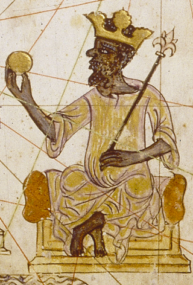
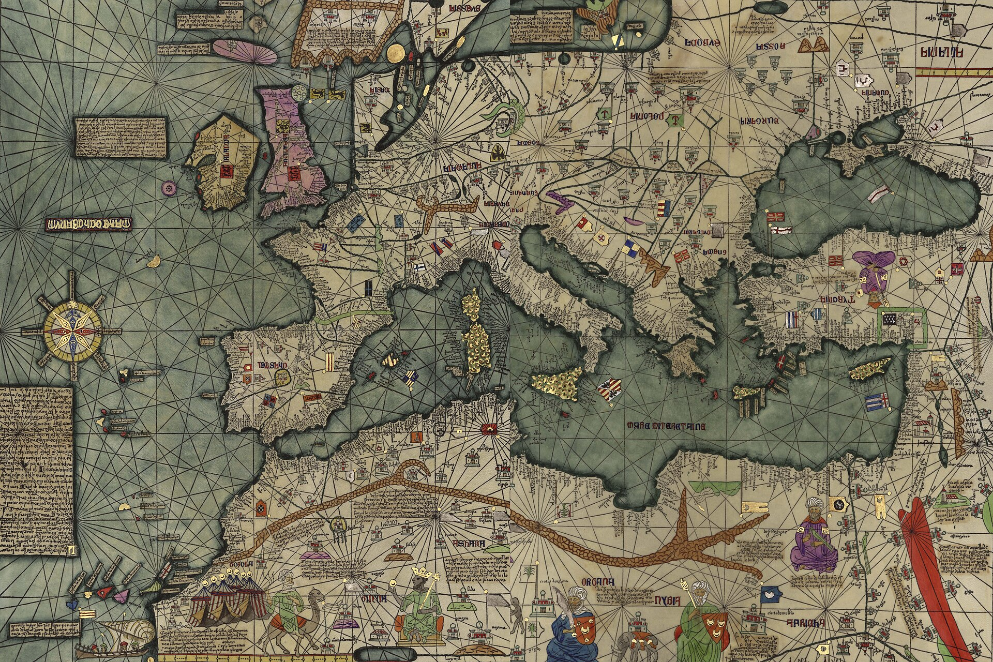
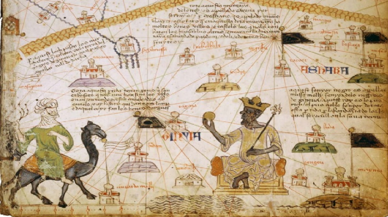
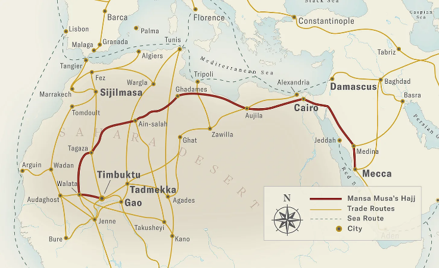

Central Historical Question
Was Mansa Musa the richest person ever?
Below will be some evidence that can possibly help answer the question. Consider the evidence before answering the question in your notebook.
1. Mansa Musa's Wealth

During the reign of Mansa Musa, the empire of Mali accounted for almost half of the Old World's gold, according to the British Museum.
2. The Catalan Atlas

The Catalan Atlas, 1375 by Abraham Cresques
The atlas of Catalan was a historic map by the Spanish Jewish map-maker Abraham Cresques. The map showed parts of the world that were not very well known by most europeans. This meant that sometimes it included places that weren't real, like the legendary Island of Thule. (Look for the pink oval near Scotland)
Cresques included Mansa Musa on his map and what he said about him reflects what even Europeans had heard about him from far away.

"This Black lord is called Musa Mali, Lord of the Black people of Mali. So abundant is the gold which is found in his country that he is the richest and most noble king in all the land." —Catalan Atlas inscription
3. Mansa Musa's Hajj (Pilgrimage)

"this man flooded Cairo with his benefactions [gifts]. He left no court emir [official] nor holder of a royal office without the gift of a load of gold. . . . They spent gold until they depressed its value in Egypt and caused its price to fall."
Mansa Musa's legend centers around his Pilgrimage to Mecca, during which he built whole new cities just to house the servants he traveled with, and gave away so much gold that he hurt the price of gold in the Arab world.
Do you think Mansa Musa really was the richest guy ever? What is your evidence